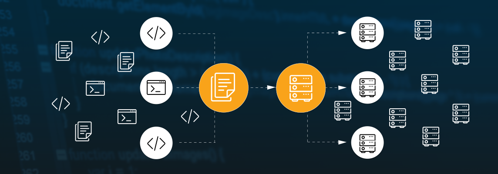
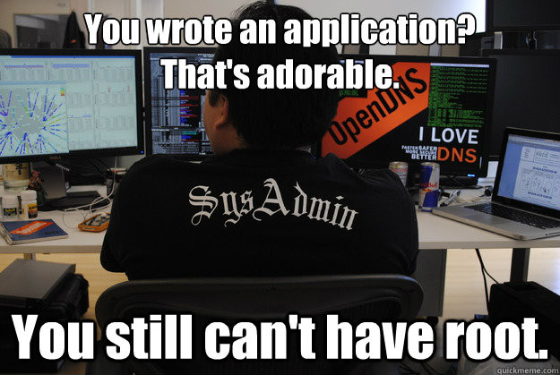
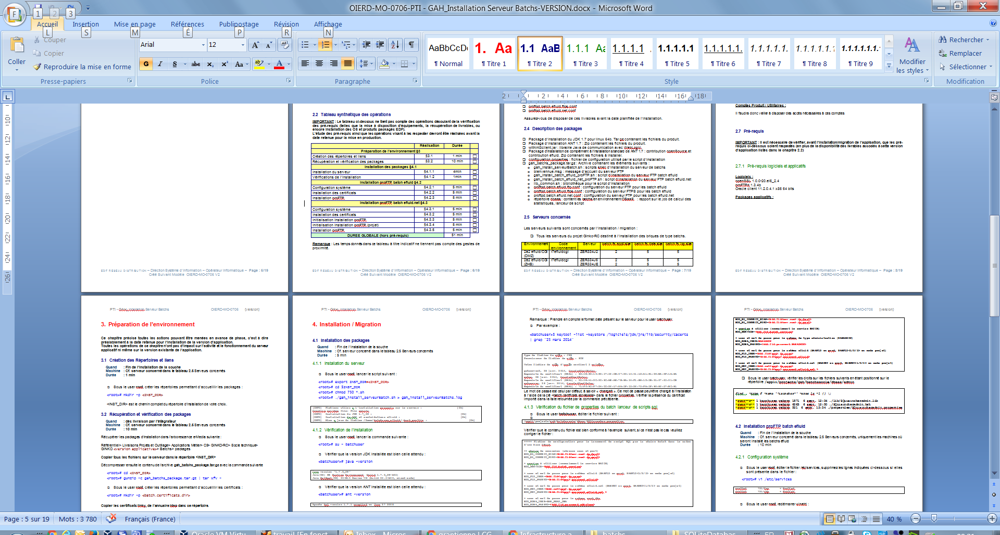
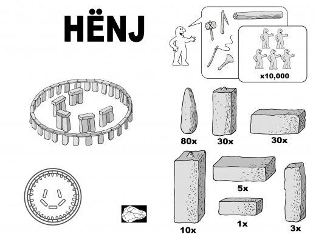
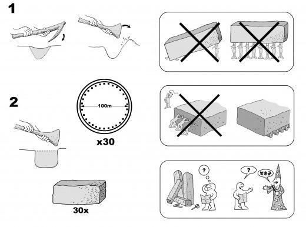
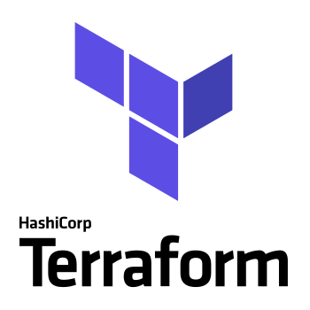
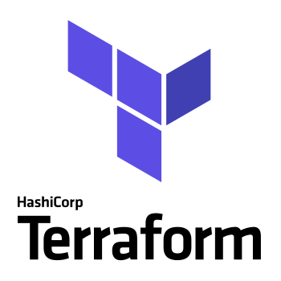
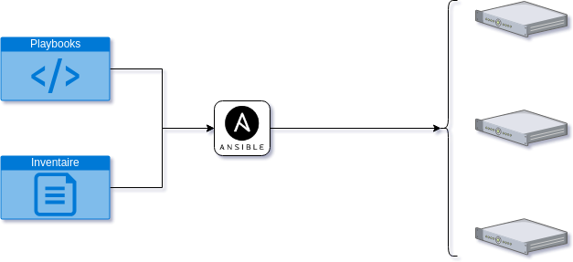

Meetup IAC Anglet
Infrastructure as Code

Principe agilité

Ce qui se traduit par ...
- Augmentation fréquence livraisons
- Intégration continue
- Déploiement continue
- Augmentation environnements
Scalabilité sysadmin

Document d'installation

Installation batchs Java
19 pages de littérature inoubliable
- Un cartouche (3 pages)
- Une table des matières
- Une présentation (3 pages)
- Des prérequis (2 pages)
- Les commanges à lancer (10 pages)
Tout ça pour ...
Maintenant, il faut
- Un serveur d’application
- Une base de données
- Un serveur Apache
- Installer l’application
- De la surveillance
- Configurer la sauvegarde
- …
Et vous avez ...
- environ 400 pages de littérature à suivre
- les zones d’ombres
- les gestes non documentés
Mais vous devez également ...
- Gérer plusieurs environnements
- Lancer l’installation plusieurs fois
- Gérer la production
- Exploiter les plateformes
Préparez-vous, ça va chauffer
Création d'infra
Vite, tous dans le cloud !
- Mise à disposition rapide
- Paiement à la consommation
Problème

Scalabilité et erreurs


Comment sortir de cette situation
Quelques solutions
 


Utilisation d'Ansible

Le playbook
- name: "Create JDK directory"
file:
path: "/opt/jdk"
state: directory
- name: "Uncompress JDK"
unarchive:
src: "jdk-9.0.4_linux-x64_bin.tar.gz"
dest: "/opt/jdk"
L'inventaire
[batch]
demo-batch1
[tomcat]
demo-tomcat1
[all:vars]
ansible_connection=docker
docker_network_name=demo.meetup
Utilisation d'Ansible
Création de VM/container
- Description plateforme attendue
- Demande de provisionnement
Démo

Ce qu'il faut retenir
- L’infra se gére comme du code
- En conséquence l’exploitation également
- Repenser certains aspects
{kind=link}
{kind=link}
{kind=link}
{kind=link}
{kind=link}
{kind=link}